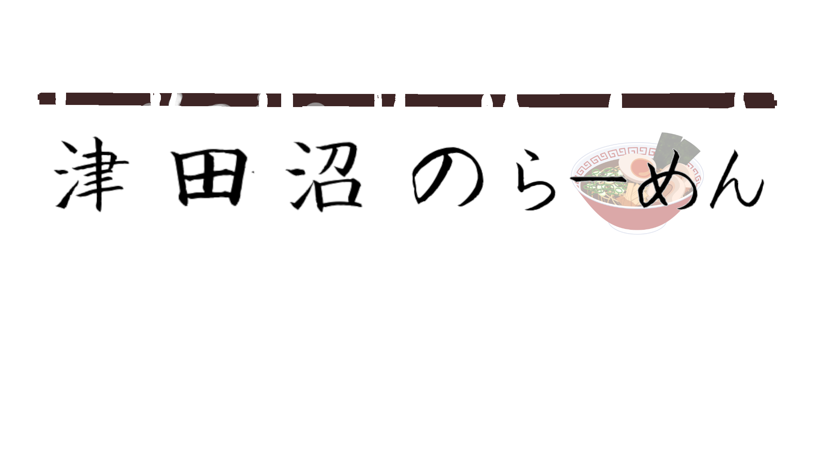
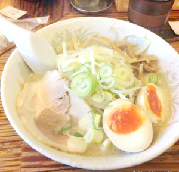
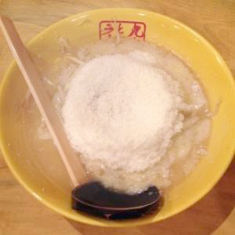
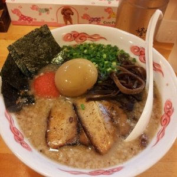
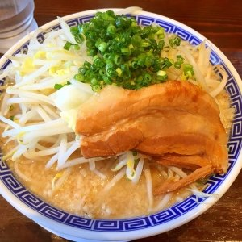
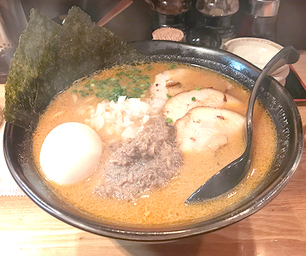
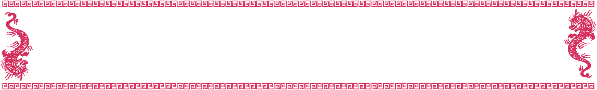

なりたけ -Naritake-
-infomation-
津田沼随一のラーメン激戦区、一番の老舗が1996年創業。 店主はこってりで有名な「ラーメン弁慶」で修業。
平網を使って背脂をチャッチャと落とすラーメンは、当時大変珍しく、 こってりしたラーメンをがっつり食べたい学生を中心に大人気に。 今や、津田沼の1号店を始め、幕張・本八幡・錦糸町・池袋・名古屋、そしてパリに店舗を構えるまでになりました。
スープ文化のフランスではスープを飲み干すパリジャン・パリジェンヌが続出という、クセになるこってりらーめん。
-image and access-
{kind=link}
九十九ラーメン -Tsukumo-
-infomation-
当店の「九十九」という名にはお客様の健康を願い 様々な素材から旨みを集め奥深い味を提供したいという思いが込められています。
※メニューから本当に健康を願っているかは不明。 人気ナンバーワン、元祖マルキューチーズラーメンで使われているチーズにもこだわりの秘密が!! 「十勝 ゴールデンゴーダチーズ」をふんだんに使うことで、究極のチーズラーメンの味が生まれます。
-image and access-
{kind=link}
南木商店 -Namiki syouten-
-infomation-
豚頭骨からしっかりと旨みを取り切り、背脂の旨みをのせたスープは、程よい粘度で麺によく絡みます。
さらに、味を決定的に高めてくれるのが焦がしニンニク・揚げニンニク、ニンニク油の風味を生かした自家製のマー油。 とんこつスープに合わせることで香りとコクが立ち、パンチがありつつ全体のバランスを高いレベルで整えてくれています。
卵白入りの低加水細麺もパキッとした歯応えで、心地よいリズム感で食べられます。
-image and access-
{kind=link}
必勝軒 -Hissyouken-
-infomation-
ＪＲ津田沼駅南口を下車。ロータリー左手にある千葉工業大学前の道をマロニエ通りに向かって５分ほど歩くと左手にお店があります。
店内に製麺所があり､スープだけでなく麺へのこだわりがある。 必勝軒のスープは曜日ごとに変わります｡
月･火:バランススープ
水:濃厚鶏豚スープ
木:濃厚魚介スープ
金:魚介系強調スープ
土･祝日:オールマイティースープ
-image and access-

無限大 -Mugendai-
-infomation-
無限大は俗にいう二郎インスパイア系で、特に若い男性からの支持が圧倒的！因みに無限大の店舗は、この津田沼以外に船橋と西千葉にもある。
二郎インスパイアなためトッピングが選べる。
トッピングは背脂、にんにく、野菜（もやし）がある。
学生証提示でラーメンを中盛りにしてもらうか、のりトッピングして貰える。
-image and access-
{kind=link}
鈴木さん -Suzukisan-
-infomation-
こってりらーめん なりたけ』や『九十九（つくも）ラーメン』など、津田沼の有名どころがひしめく津田沼十字路の交差点から、
100m足らずの場所にあるお店。 秋刀魚醤は、頭と尻尾を除いたサンマの塩焼きに、旨味をプラスする、
にんにく、たまねぎ、貝柱、さらにサラダ油を加えて煮込んでいます。
骨も一緒に煮込むことで食感もアップさせています。
夏には冷やし中華秋刀魚など、定番のサンマを別バージョンで楽しめます。
また、牡蠣やハマグリ、アンキモなど、魚介を使った限定もチェックしたいもの。
-image and access-
{kind=link}
